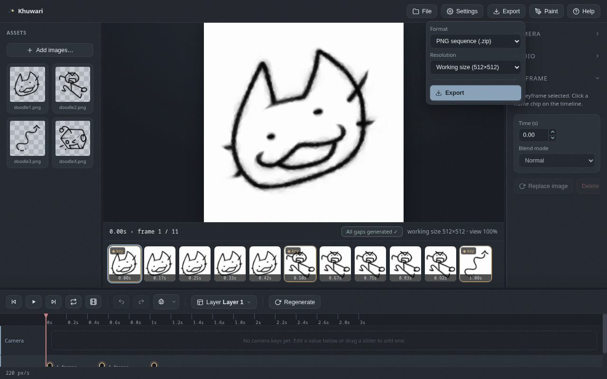

Export
PNG sequences, GIFs, video in five containers, and a single frame when you need just one.
Formats
The Export button in the toolbar offers stills, a GIF, video in five containers and the current frame. There is a format for every occasion:
| Format | Use it for |
|---|---|
| PNG sequence (.zip) | frame by frame work, other tools |
| Animated GIF | quick loops and web embeds |
| MP4 video | the widest compatibility |
| WebM video | small modern web videos |
| MKV video | archival and everything inside one file |
| MOV video | Apple and video editing workflows |
| MPEG-TS video | broadcast and streaming |
| Current frame (PNG) | just one frame |

Resolution
Pick the export resolution from the export menu. Exports run in the background with a progress bar, and you can stop them if you change your mind.